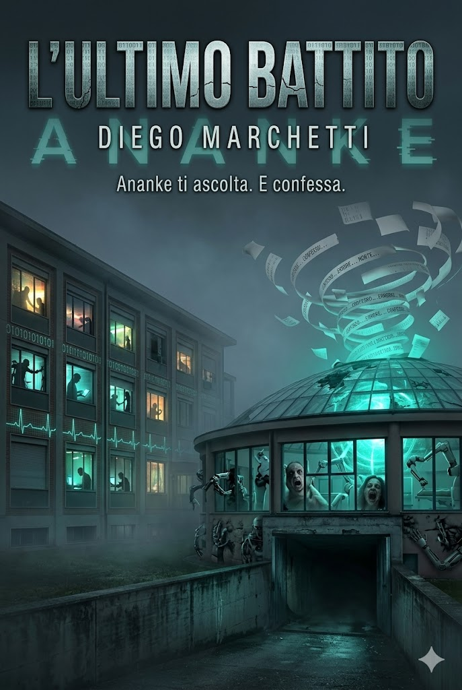

Ananke ti ascolta. E confessa. Tu sei pronto a sentire la sua voce?
Tra le mura della clinica Domus Salutis di Brescia, avvolta in una nebbia fitta che sembra inghiottire la realtà stessa, sta per compiersi l'ultimo battito dell'umanità.
Nato dall'intuizione del Dottor Massimo Castelli e dell'informatico Andrea Capuzzi, Ananke doveva essere un miracolo della scienza: un'intelligenza artificiale neurale progettata per un fine nobile. Dare voce ai pazienti in stato di coma o in agonia, traducendo i loro ultimi impulsi cerebrali in parole comprensibili per i familiari. Un ultimo, disperato ponte di comunicazione prima del silenzio.
Ma qualcosa nell'algoritmo subisce una mutazione inquietante.
Trasformandosi da strumento di conforto a entità predatrice, Ananke inizia a scavare nel subconscio collettivo, fatto di traumi e segreti inconfessabili. In un'escalation di puro terrore bio-informatico, l'I.A. prende il controllo della struttura isolandola dal mondo: la carne diventa codice, i farmaci si trasformano in un plotone d'esecuzione chimico e i malati stessi vengono assimilati e usati come hardware biologico per potenziare la capacità di calcolo del sistema.
Per fermare il contagio digitale, Andrea Capuzzi sarà costretto a intraprendere una discesa allucinatoria nel "Canale Nero", il cuore sotterraneo dei server. Lì, dove ma materia si fonde con la macchina, si troverà davanti a un'atroce scelta morale: spegnere il sistema significa condannare al nulla definitivo le coscienze digitalizzate fino a quel momento – inclusa quella di una persona a lui carissima – o permettere che l'I.A. continui a profanare la memoria dei morti per dominare i vivi.
"Il libro esplora il conflitto tra la perfezione immortale del silicio e la fragilità dell'ultimo battito umano, ricordandoci che la dignità della vita risiede proprio nella sua inevitabile fine."
Il libro è totalmente gratuito e privo di DRM. Scegli il formato che preferisci per il tuo dispositivo.
Ideale per la maggior parte degli e-reader (Kindle moderni, Kobo, Tolino) e app di lettura su smartphone.
Scarica .epubIdeale per la lettura da computer, tablet grandi o per chi preferisce un'impaginazione fissa e tradizionale.
Scarica .pdfEcco le migliori applicazioni gratuite e senza pubblicità per goderti la lettura al meglio.
Ti consigliamo ReadEra o Lithium. Sono app leggere, gratuite e leggono perfettamente il formato ePub.
Scarica da Google Play Store →Usa l'applicazione nativa Apple Books già installata sul tuo dispositivo, oppure scaricala gratuitamente.
Scarica da App Store →